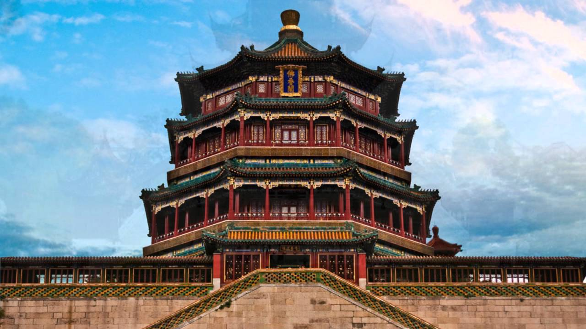

Cultura, Arte y Entretenimiento Chino
Desde tiempos antiguos, la cultura china ha sido influenciada fuertemente por el confucionismo y las filosofías conservadoras. Durante gran parte de la era dinástica, la oportunidad de subir en la pirámide social se presentaba al obtener un buen desempeño en el prestigioso examen imperial, cuyos orígenes se remontan a la dinastía Han. El énfasis literario de la prueba afectó la percepción general del refinamiento cultural en China, de modo que se pensaba que la caligrafía, poesía y la pintura eran formas de arte superiores a la danza o el teatro. La cultura china ha enfatizado constantemente un sentido profundo de historia y una perspectiva de introspección nacional. Los exámenes y la cultura de méritos aún son muy valorados en la China actual.
ARTE
La pintura china data de unos 5000 años, época en que los chinos dibujaban imágenes de personas y animales en las rocas con tintes hechos con mineral, y hacían dibujos de diversos objetos de cerámica.438Después, grabaron dibujos y motivos místicos en piezas de bronce. Los pocos que se han encontrado nos verifican como era esa pintura; son pintados en seda y se calculan que se pintaron alrededor de unos 2000 años atrás. La pintura china temprana se basa en varios tipos de figuras, teniendo desde figuras humanas hasta representaciones de paisajes con pájaros y plantas. Ya hacia el siglo XVII, se introdujeron pinturas procedentes de Europa en China; a este tipo de arte se lo llamó «pintura de Occidente», y al arte nacional, «pintura tradicional de China». En el Extremo Oriente, la pintura del país es la principal corriente del arte pictórico.

MUSICA Y BAILE
La música tradicional china se puede dividir en dos grandes ramas: la música clásica y la folclórica. Hasta finales de la dinastía Qing, la música clásica era un lujo de la clase alta, y la gente ordinaria no estaba muy relacionada con este estilo.Generalmente es solo instrumental, se toca con un solo instrumento o en pequeñas agrupaciones que incluyen instrumentos de cuerda, flautas y varios timbales, gongs y tambores. La flauta de bambú y el guqin se encuentran entre los instrumentos más antiguos utilizados en el país.Los instrumentos chinos tradicionalmente se dividen en ocho grupos o bayin (八音), según el material del que están hechos. Las categorías son: seda, bambú, madera, piedra, metal, arcilla, calabaza y cuero. El término guoyue, o música nacional, se volvió popular a principios del siglo XX y se utilizó para englobar todas la música escrita para los instrumentos chinos, en respuesta a los movimientos nacionalistas.Cada etnia que habita el territorio chino cuenta con sus propias tradiciones respecto a la música folclórica. A comparación del estilo clásico, las tradiciones folclóricas tienen un acompañamiento vocal y pueden incluir agrupaciones más grandes.De hecho, las tradiciones folclóricas fueron las que se mezclaron con los estilos occidentales del siglo XX y XXI para dar paso a nuevos géneros y una nueva etapa en la música china. El c-pop, el mandopop, el cantopop, el rock chino y el rap chino son algunos de los géneros que resultaron de esta fusión. Sin embargo, a diferencia de los países vecinos, China no es considerado un mercado importante para la producción y consumo de la música popular. La danza china es un arte que cuenta con muchos estilos y géneros tradicionales y modernos. Puede abarcar desde bailes folclóricos a presentaciones de ópera y ballet y puede ser utilizada en celebraciones públicas, rituales y ceremonias. La danza fue una de las primeras formas de arte desarrolladas en la Antigua China, y algunos estilos tienen sus orígenes en la dinastía Zhou.Al igual que la música, cada grupo étnico tiene sus propias tradiciones de danza folclórica. Algunas de las danzas chinas más conocidas a nivel internacional incluyen la danza del dragón y la danza del león.
ARQUITECTURA
La arquitectura tradicional china está influida por el arte grecobudista del siglo I d. C.Son construcciones generalmente de madera y ladrillo. Las columnas suelen tener una altura baja y carecen de capitel. Las cubiertas cuentan con aleros gruesos y encorvados ligeramente hacia arriba. Además, se usan variadas decoraciones policromadas, como azulejos, baldosines de porcelana, incrustaciones, campanillas y juguetes; con gran variedad de detalles. Después de la creación de la República Popular, la arquitectura se modernizó y en 1980 empezó a diversificarse.

GASTRONOMÍA
Uno de los aspectos que más te sorprenderá es la comida típica de china, resumida en platos de especial sabor y en su mayoría condimentados con verduras. Y es que los platos chinos tienen ante todo saboresmuy intensos. La comida típica de china es tan diversa como su cultura: cada región tiene su propio menú y sus platos típicos. Estilos de cocina, ingredientes, sabores: todos difieren de una región a otra. Las cocinas regionales más importantes en China son:
- Cocina Cantonesa:La cocina cantonesa es famosa en todo el mundo por su estilo distintivo. La mayoría de los platos se cuecen al vapor y se fríen, lo que la hace saludable y no demasiado pesada. Aquí los platos son tiernos, ligeramente dulces y con una fragancia suave.
- Cocina de Shandong:La cocina de Shandong se originó en el este de China y presenta principalmente platos de pescados y mariscos, ya que es una provincia costera. Encontrarás vieiras, langostinos, almejas, pepinos de mar en casi todos los menús. Dependen en gran medida de los sabores salados.
- Cocina de Zhejiang: La cocina de Zhejiang también se nutre de mariscos, pero se centra más en sabores suaves y frescos. Su comida tiene una apariencia delicada. También les gusta usar brotes de bambú. Esta provincia es famosa como la «tierra de la leche y la miel».
- Cocina de Jiangsu:Del mismo modo, los platos de la región de Jiangsu son conocidos por su textura suave. En el pasado, era una parte prominente de la cocina real de la antigua China. Sus platos ofrecen un equilibrio de sabores dulces y salados.
- Cocina de Sichuan:La cocina de Sichuan destaca por sus sabores audaces, picantes y… muy picantes. El uso del grano de pimienta de Sichuan es lo que la hace única en el mundo. Esta cocina regional de china es para aquellos que aman el sabor picante.
- Cocina de Anhui:La cocina de Anhui utiliza una amplia variedad de hierbas y verduras, especialmente bambú fresco y setas. También usa muchas hierbas silvestres para mejorar el sabor y el aroma.
- Cocina de Fujian:La cocina de Fujian cuenta con muchos caldos y sopas, optando más por estilos de cocina como estofado, cocina al vapor y platos hervidos.
- Cocina de Hunan:La cocina de Hunan es conocida por su sabor picante, aroma fresco y color profundo. Esta provincia es conocida popularmente como la «tierra de pescado y del arroz». Es famosa por sus guisos, pero su cocina también cuenta con muchos platos estofados y horneados.